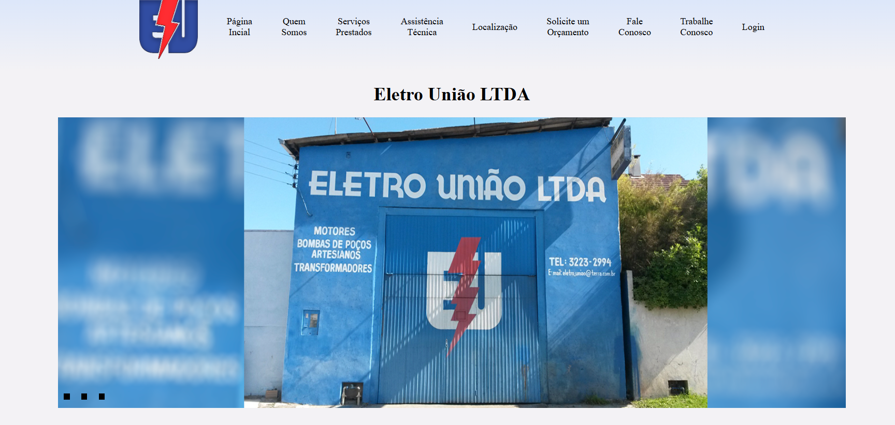
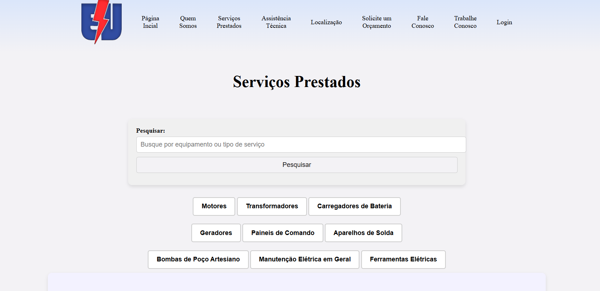
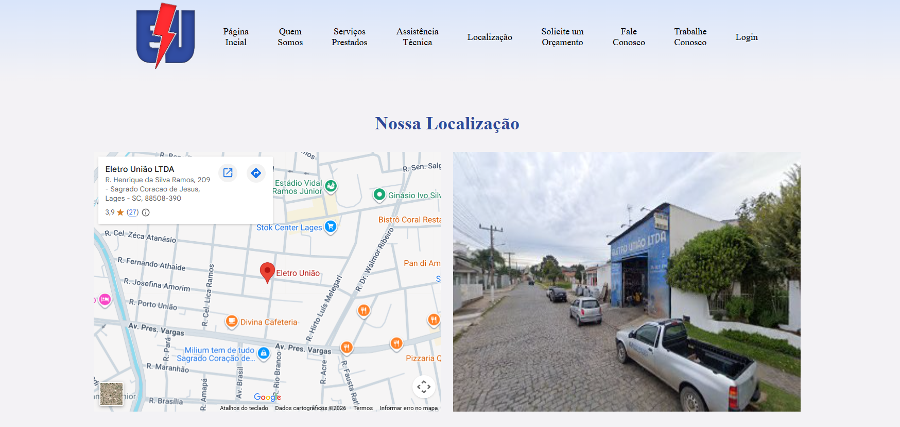
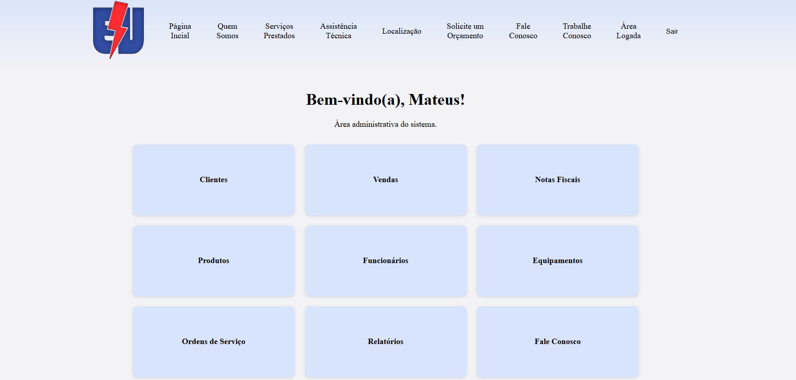

FOLHA Nº 01 — DETALHES DO PROJETO
EletroSys
Sistema de Gestão Web para Oficina Elétrica
Plataforma sob medida que integra a captação online de clientes ao controle gerencial absoluto — unificando ordens de serviço, estoque, fluxo de caixa e relatórios numa única base de dados.
FOLHA Nº 02 — O DESAFIO
O fim das planilhas dispersas
A Eletro União LTDA, oficina especializada na manutenção de motores elétricos, gerenciava sua operação diária de forma manual. O fluxo de informações — desde a entrada do equipamento, orçamento, aprovação até a ordem de serviço e cobrança — dependia de anotações em papel e planilhas desconexas.
O desafio era modernizar a presença online da empresa e, simultaneamente, construir um sistema de gestão robusto (backend) que abraçasse toda a lógica do negócio, sem burocratizar o trabalho dos técnicos ou o atendimento ao cliente.
FOLHA Nº 03 — A SOLUÇÃO
Da Vitrine ao Dashboard Operacional
O sistema atua em duas frentes: uma área pública otimizada para captar orçamentos e consolidar a marca na web, e uma área restrita altamente detalhada para garantir precisão e velocidade na gestão da oficina.

Portal Institucional (Vitrine)
A página inicial atua como a vitrine digital da Eletro União LTDA. Conta com uma apresentação visual dinâmica (slideshow) e informações institucionais, projetada para estabelecer credibilidade imediata junto aos clientes e empresas do setor.

Serviços Prestados
Apresenta o catálogo de serviços oferecidos pela Eletro União LTDA, permitindo que os clientes pesquisem por equipamentos ou tipos de serviços.

Localização e Acesso
Módulo de informação logística para guiar os clientes fisicamente até a oficina em Lages/SC, facilitando a entrega e retirada de motores elétricos pesados e equipamentos industriais.

Painel de Gestão Operacional (O Motor do ERP)
A área restrita substitui completamente as anotações físicas. É utilizada pelos gestores para administrar clientes e fornecedores, monitorar o estoque de peças, formalizar vendas e ordens de serviço, e gerar inteligência financeira por meio de relatórios de fluxo de caixa.
FOLHA Nº 04 — ARQUITETURA
Bastidores Técnicos
A aplicação foi construída visando escalabilidade e segurança de acesso. O framework Django fornece a robustez necessária para as Views (regras de negócio) e o Admin (gerenciamento de conteúdo), enquanto o PostgreSQL assegura a integridade das transações financeiras e histórico de manutenções.
- Python
- Django Framework (Views & Admin)
- PostgreSQL
- Design UI/UX Responsivo
- Autenticação / Níveis de Acesso